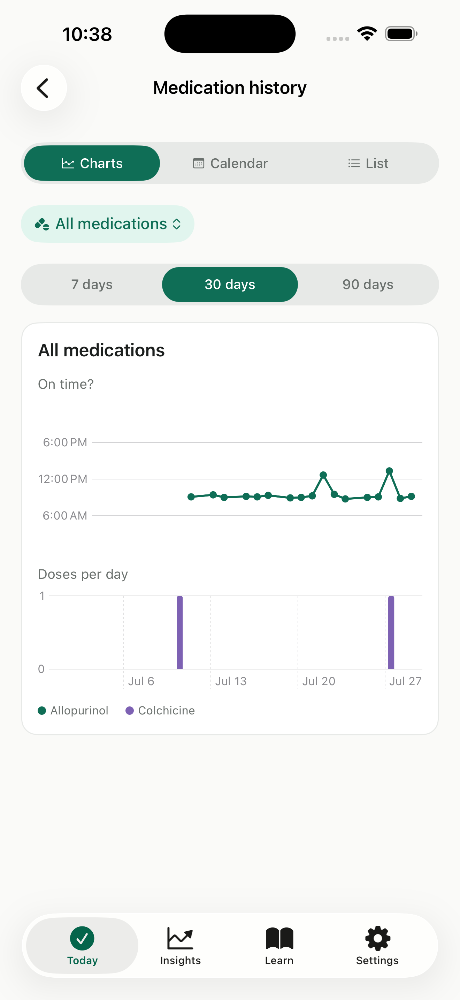
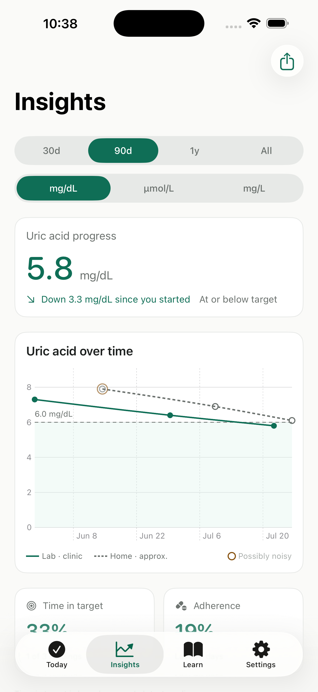
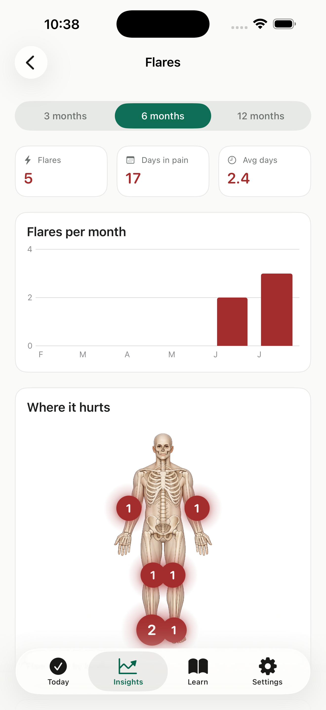
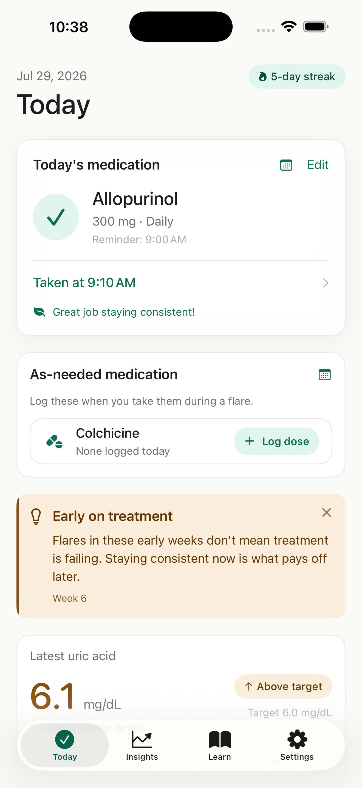
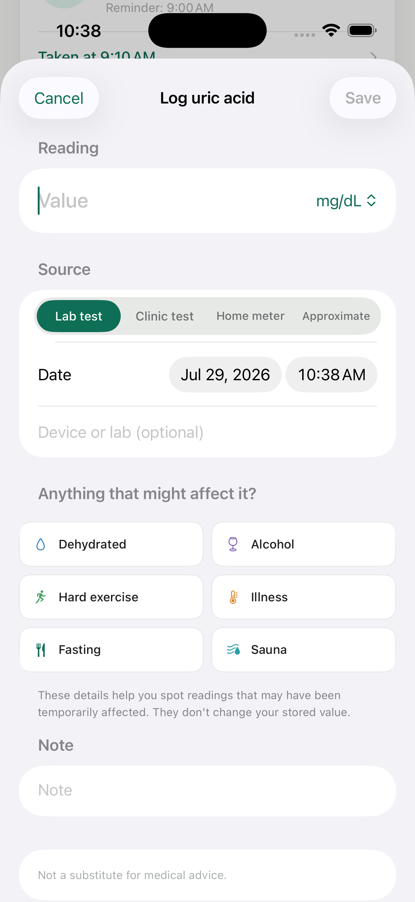

Medication
Never lose track of a dose
See what you took and when — and which days slipped. Goutly keeps your daily medication and your as-needed rescue meds in one place, and reminds you before the day gets away from you.
Medication, not menu.
Goutly keeps your gout treatment on track — steady medication and a clear view of your uric acid — so an early flare doesn't talk you into stopping.
No account. Your health data stays on your phone.
What Goutly does

Medication
See what you took and when — and which days slipped. Goutly keeps your daily medication and your as-needed rescue meds in one place, and reminds you before the day gets away from you.

Uric acid
A clean chart of every reading over time — how far you've come and how far there is to go. Lab results and home-meter readings stay in separate series, so nothing gets muddled. You track your progress toward the target your doctor set.

Flares
How often they come, how many days in pain, how long they tend to last — and a body map showing where they land. Tap a joint to see the count for the left and right side, so a pattern you couldn't quite name becomes something you can see.
Early on treatment
Flares in these early weeks don't mean treatment is failing. Staying consistent now is what pays off later.
Week 6 · sourced
Learn
Short, sourced reads that get to the point — starting with the one that matters most in the early days: don't panic, and stay on your medication. No noise, no scare tactics.
How it works
Add what your doctor prescribed and your latest uric acid number. That's the whole setup.
Your adherence and your readings turn into a picture that's easy to read at a glance.
When a flare hits, Goutly reminds you why to keep going — and helps you log it, not fear it.
A look inside


Good to know
No. Goutly is a wellness and tracking tool. It doesn't diagnose, treat, or give dosing advice. It logs what your doctor prescribed and helps you keep to it. Always follow your doctor.
No. Your medications, readings, and flares stay on your device — there's no account and no cloud for them, and we never receive them. To handle optional subscriptions we use Apple, RevenueCat, and Superwall, which process only purchase and device data, never your health information. See our Privacy Policy.
No. Open the app and start — no sign-up, no email, no password.
Your daily gout medication and any as-needed rescue medication your doctor has prescribed. You log what and when; Goutly handles the reminders and keeps the history.
Goutly is free to download, and you can track your medication and readings without paying. An optional Premium subscription unlocks deeper analytics, PDF/CSV export, unlimited history, and trigger correlations — billed through your Apple ID.
English, Vietnamese, Japanese, and Simplified Chinese.
Start today — it takes a minute, and nothing leaves your phone.
Download on theApp StoreNo account. Your health data stays on your phone.